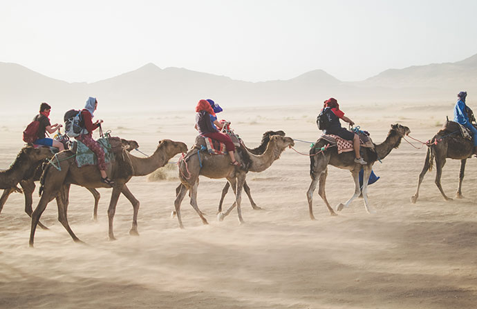

Gallery



×

Construction of multi-layer prefabricated walls used in skeletal or modular construction. These walls consist of several layers of different materials that together form a complete structure, ready for assembly:
The main building material used is specialized construction wood marked as KVH with the C24 standard. The high quality of all materials guarantees durability and safety. The wooden frame is the foundation that gives the wall stability and load-bearing capacity. The frame is spaced at regular intervals, usually every 60 cm, or according to a detailed technical drawing, depending on the client’s needs.
The thermal insulation layer, mainly made of styrofoam, mineral wool, vapor barrier film, or rock wool, ensures the building remains energy-efficient by preventing heat loss in winter and maintaining coolness in summer. It also improves acoustic performance within the structure.
To increase fire safety, gypsum-fiber boards or other fireproof materials are placed on the insulation layer. These boards slow down the spread of fire, which is especially important in modular constructions, where combustible materials are often used.
The gypsum boards are the standard interior finish, providing a smooth, durable surface suitable for painting or other finishes. These boards ensure a high-quality aesthetic while also offering some soundproofing properties.
The outer layer of the wall is often made of cement-fiber boards (e.g., Cembrit). These boards are resistant to moisture, frost, and fire, making them ideal for exterior facades. In addition to their protective function, these boards also have an aesthetic appearance and can be painted or plastered.
Feel free to reach out to us via any of the channels below.